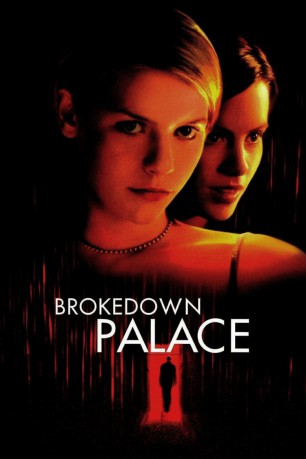

#10625 Brokedown Palace - Die Hoffnung stirbt zuletzt
Alternativ: Brokedown Palace (Englischer Titel)
 
 IMDB-Wertung: 6.4 / 10
IMDB-Wertung: 6.4 / 10  Metascore: 44
Metascore: 44 
Bevor der Ernst des Lebens beginnt, wollen die College-Absolventinnen Alice und Darlene nochmal Spaß haben. Ziel ihrer Abenteuertour ist Bangkok. Ein Australier benutzt die Mädchen als Drogenkuriere. Alice und Darlene werden geschnappt und müssen für 33 Jahre ins Gefängnis.
Jahr: 1999
Dauer: 100 Minuten
FSK: 12
Land: USA Studio: Twentieth Century FoxTonspuren: DTS - ,
Untertitel: Deutsch, Englisch,
Auflösung: 1080p (1910x820) Größe: 5632 MB
Genre: Thriller, Drama, Mystery
Regisseur: Jonathan Kaplan
Drehbuch: Adam Fields, David Arata, David Arata
Soundtrack: David Newman
Darsteller:
 Claire Danes als Alice Marano
Claire Danes als Alice Marano Kate Beckinsale als Darlene Davis
Kate Beckinsale als Darlene Davis Bill Pullman als Hank Greene
Bill Pullman als Hank Greene- Jacqueline Kim als Yon Greene
 Lou Diamond Phillips als Roy Knox
Lou Diamond Phillips als Roy Knox Daniel Lapaine als Nick Parks
Daniel Lapaine als Nick Parks- Tom Amandes als Doug Davis
- Aimee Graham als Beth Ann Gardener
 John Doe als Bill Marano
John Doe als Bill Marano- Bahni Turpin als Jamaican Prisoner
- Amanda De Cadenet als English Prisoner
- Lilia Cuntapay als Old Prisoner
- Maya Goodwin als Mary
- Chad Todhunter als Ferg
- Lori Lethin als Lori Davis
- Hayley Palmer als Heidi Davis
- Victor Neri als Bellhop
- Ermie Concepcion als Paku
 Sahajak Boonthanakit als Sgt. Choy
Sahajak Boonthanakit als Sgt. Choy- Val Victa als Lt. Tung
- Joonee Gamboa als Attorney Montree
 Harry Northup als Leon Smith
Harry Northup als Leon Smith- Ronnie Lazaro als Security
 Espérance Pham Thai Lan als Shub, woman (uncredited)
Espérance Pham Thai Lan als Shub, woman (uncredited) Paul Walker als Jason (uncredited)
Paul Walker als Jason (uncredited)- Kay Tong Lim als Chief Detective Jagkrit
- Beulah Quo als Guard Velie
- Henry O als Emissary to Crown
- Inthira Charoenpura als Prisoner Shub
- Somsuda Chotikasupa als Glasses Guard
- Rhency Padilla als Pool Boy
- Nopachai Israngkur na Ayudhya als Cabbie #1
- Ayutthaya A. Payakkapong als Cabbie #2
- Seng Kawee als Shouting Soldier
- Phikun M. Sabino als Guard Sorhirun
- Toun Tolentino als Old Dorm Guard
- Tawewan Promgontha als Young Dorm Guard
- Sawan Edo als Guard Sawalee
- Sudarat L. Gaoat als Guard Mangman
- Tawatchai Teeranusoon als Thai Judge #1
- M. Tom Visvachat als Thai Judge #2
- Anthony Carney als Doug's Translator
- Pichada de Jesus als Darlene's Translator
- Sutagorn Jaiman als Prosecutor
- Pathompong Supalert als Defense Attorney
- Achavasak Phitak als Officer Deesom
- Songkran Somboon als Officer Changjarung
- Johnny Ray McGhee als DEA Agent
- Phanom Promguntha als Customs Supervisor
- Jake de Asis als Royal Thai Guard
Datei: X:\1999\Brokedown Palace - Die Hoffnung stirbt zuletzt (1999, FSK12, 1910x820).mkv seit 04.02.2019
Festplatte: Gemischt-01+Anime
 Es gibt insgesamt 81 Filme in der Gruppe '1999'
Es gibt insgesamt 81 Filme in der Gruppe '1999'